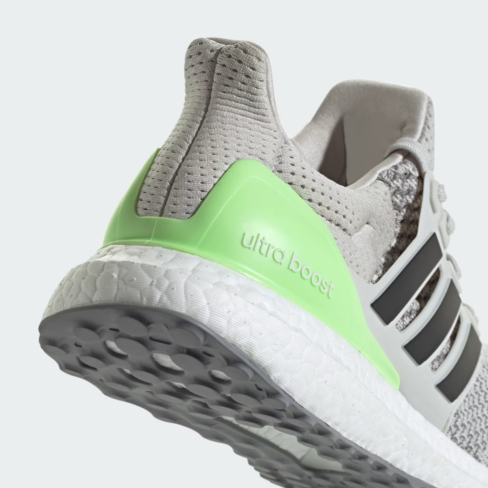
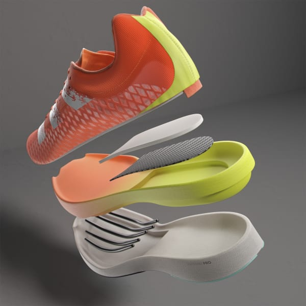
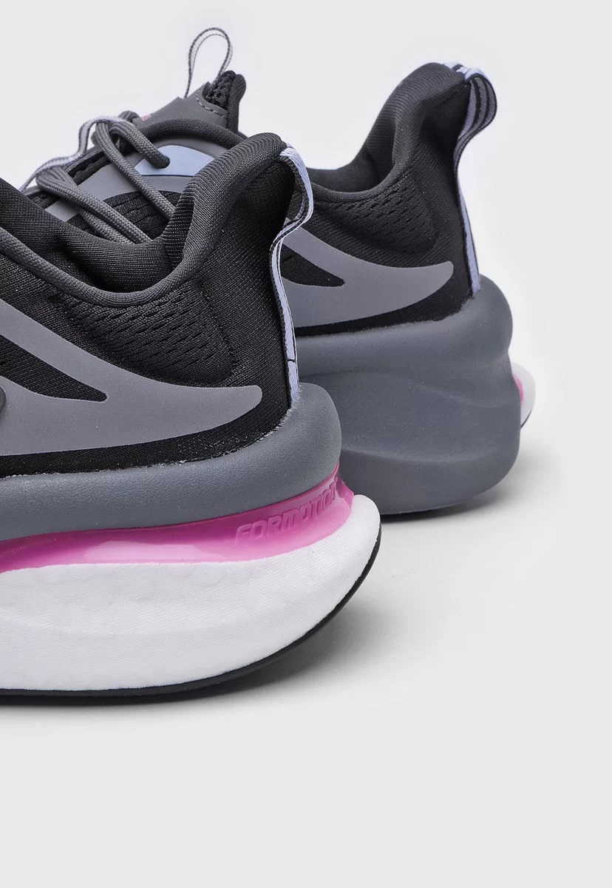

Ultraboost
La tecnología Boost de Adidas es una innovación en el campo de la amortiguación deportiva que combina dos beneficios: suavidad y amortiguación receptiva. La entresuela Boost está hecha con miles de partículas expandidas de poliuretano termoplástico (TPU). Esta tecnología mezcla un ligero y amortiguado impacto al apoyar el pie en el suelo, con una vuelta eficiente de la energía. Se adapta a temperaturas extremas.
LightStrike
Es una estructura de mediasuela en capas confeccionada con espuma reactiva de alto rendimiento. Ofrece una mayor respuesta y transición anatómica en la carrera. Se combina en el antepié y se rediseña en la zona del talón y el mediopié para ofrecer un mejor aterrizaje.
Bounce
La tecnología Bounce ofrece varios beneficios en el running, entre ellos una mayor amortiguación y estabilidad. Esta espuma es más firme y duradera que el EVA tradicional, lo que ayuda a reducir la fatiga muscular y el riesgo de lesiones.
Formotion
Es un sistema movil de placas superpuestas en la zona del talón que hace que el pie contacte con el suelo de una manera más suave, progresiva y natural en cualquier tipo de terreno.
Torsion
El sistema Torsion consiste en un arco de TPU, más rígido que la mediasuela, que se encarga de unir talón y antepié, lo que permite que la parte delantera y trasera del pie operen de modo independiente, mejorando la transición.
Continental
Es el resultado de una colaboración entre adidas y la marca de neumáticos Continental. Consiste en usar un compuesto de caucho de alta calidad que ofrece una adherencia superior tanto en seco como en mojado, y una resistencia al desgaste mayor que la de otros materiales.
Traxion
Es un diseño de tacos en la suela que provee el máximo agarre en todas las direcciones, minimizando la presión en la planta del pie. Esta tecnología se adapta a diferentes tipos de terreno y superficie, ofreciendo una tracción óptima y una estabilidad segura.